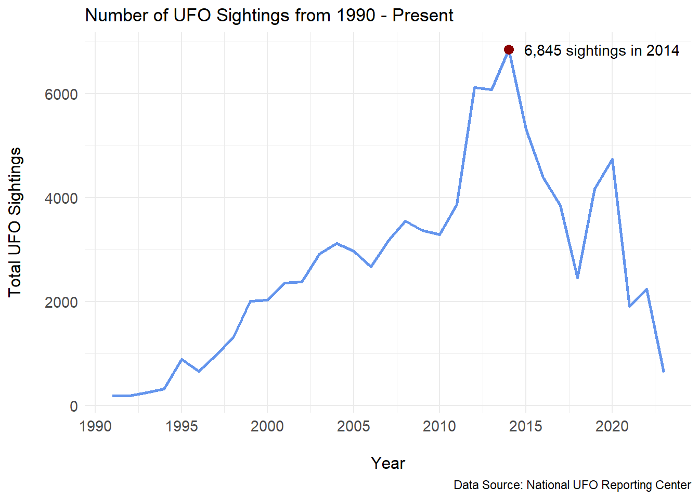
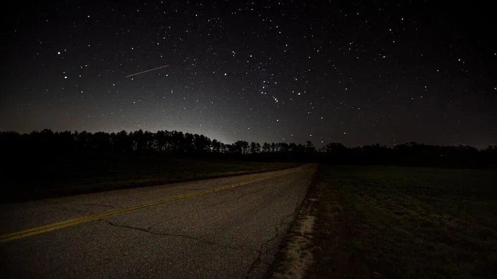
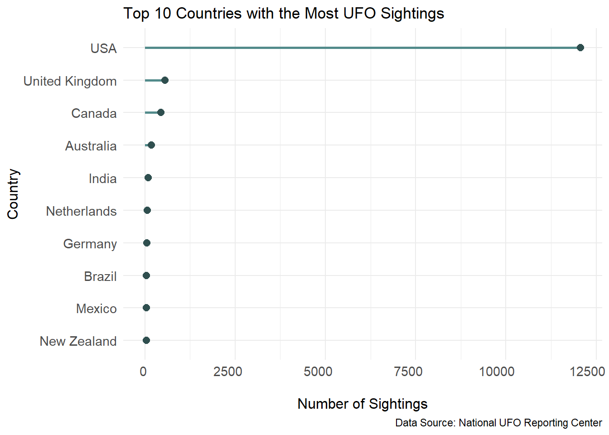
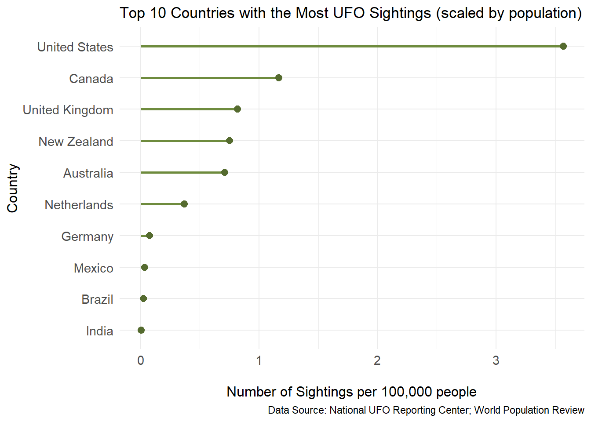
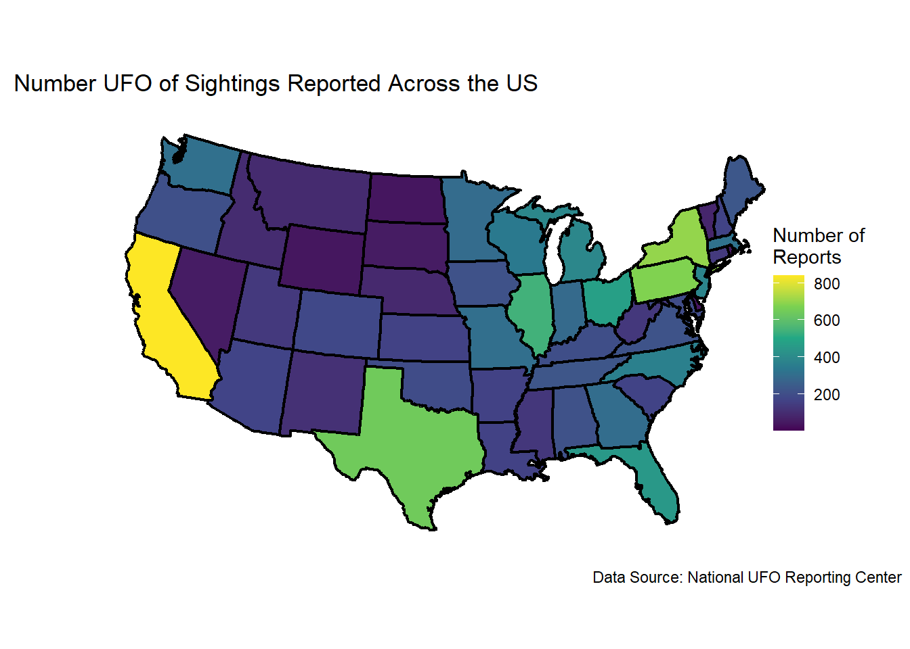

Have you ever looked to the sky and thought about the possibility of life beyond our planet? Maybe spotted some weird shape or suspicious blinking lights flying around in the night sky? Well, whether you’re a skeptic or believer, thousands of UFO sightings - or unidentified flying objects - get reported around the world every year. For this analysis, we will be investigating when and where most of these reports have occurred.
A Look at the Data
The data used within this analysis comes from the Nation UFO Reporting Center (NUFORC). We will also be using a data set containing information on world population, used by the World Population Review. The primary data set from the NUFORC contains UFO sightings reported in 1925 all the way to the present year.
Here are some of the interesting variables included in the NUFORC’s data set:
reported_date_time: the time and date of the sighting, as it appears in the original NUFORC data
country: the name of the country
state: the state, province, or similar division of the sighting
city: the city of the sighting
shape: the reported shape of the craft
reported_duration: the reported duration of the event, in the reporter’s words
summary: the reported summary of the event
has_images: whether the sighting has images available on NUFORC
day_part: the approximate part of the day in which the sighting took place
For our research, we will be only looking at variables relating to the time and place at which the sightings were reported.
Visual Analysis
To begin our analysis, we will take a look at the amount of sightings that have been reported over time.
The plot above demonstrates the total number of sightings recorded in each year, starting from the year 1990. We chose to only show years starting at 1990 because there are little sightings recorded in the previous years, going back to 1925. It can also be seen that the year with the most recorded sightings took place in 2014, with a total of 6,845 sightings. Since then, the amount of sightings seem to be decreasing, with a small peak appearing in 2020. Could one explanation be that people were spending significantly more time outside looking at the sky during the COVID-19 pandemic while stuck at home? Let’s take a closer look at where the majority of UFO sightings are being reported from.

The plot above demonstrates the ten countries with the most UFO sightings across all years included in our data set. The USA shows an overwhelming majority of cases, but it can be difficult to make judgments based on these numbers alone. The countries on this list differ by population, so to account for these differences and make better comparisons, we have scaled the number of sightings by the population size of each country in the plot below.

This plot allows us to have a better idea of the amount of reports in each country relative to the amount of people who live there. It is still the case, however, that the United States owns the majority of these sightings. To take a closer look at what is going on in the US when it comes to spotting a UFO, we can look at where in the US the most sightings have occurred.

The map above shows us the amount of sightings that have been reported across each state in the US. Interestingly, it seems that the most reports come from California, followed by New York, Pennsylvania, then Texas. It is important the note here that these are some of the states with the most amount of people due to their large cities, and the higher number of reports could be due to the higher amount of people. It is interesting however, that the order of states with the most sightings is not directly correlated with the population of that state.
Conclusion
In conclusion, we found that the number of UFO sightings began steadily increasing in the 90’s and peaking in 2014. After 2014, the number of UFO sightings have decreased, with a small increase in 2020. We also found that the United States holds the most number of reported sightings in the world. California takes the lead with the highest number of sightings in the US, followed by New York.
If we had more time with this project, we would have included Hawaii and Alaska in our map of the US, although the number of sightings in those states were very low. We would also have looked into the amount of sightings in each state when scaled by their population size to further investigate the number of sightings reported in each state.
In the future, it would be interesting to investigate some of the other variables included in the NUFORC’s data that relate to the report itself, such as the shape of the object or duration of time it was seen. Whether you’re a believer or not, the amount of worldwide sightings is interesting, so maybe tonight you should spare a moment to look up at the sky and see if you spot anything out of the ordinary!
Connection to Class Ideas
We chose to only display years after 1990 in our first line plot in order to eliminate unnecessary white space and more easily see the trend of sightings during this time. It was also decided to place a red dot and a label on the year with the highest number of sightings to draw attention to this year specifically. We chose to color each of our plots to make them more visually engaging and we enlarged the font size of all the labels in the plots to make them easier to read. For the map, we chose a continuous color scale to help decipher the differences among states more accurately.
Partner
For this project I partnered with Hope Donoghue.